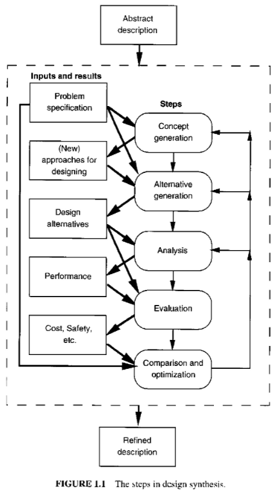

체계적인 화학공정 설계 (상) 독서노트 1
설계에 대한 현대적인 접근을 가르치는 책이다. 공정흐름도를 합성하고 설계할 수 있도록 해보자.
화학공정 설계는 이 책의 주제이다. 화학공정은 다른 물건들을 제조하는데 사용되는 물질을 만드는 것에 기본적으로 관계한다. 엔지니어의 목표는 인류에게 유용한 물품과 시스템을 설계하고 생산하는 것이다. 화공엔지니어로써 우리는 화학제품을 제조하는 공정을 창조한다. 이는 보기에도 막막해보인다. 이렇게 넓고 복잡한 문제를 어떻게 해결할 것인가?가 이 책의 주제이다.
1장에서는 화학 공정 설계와 관련된 몇 가지 일반적인 문제에 대하여 논의한다.
1.1 화학 공정의 예비 설계 단계
예비 설계 단계에서는 특정한 화학 공정에 대하여 개념적인 흐름도를 개발하고 평가한다. 이 작업은 수많은 적절한 대안 공정 흐름도를 만들고 분석하는 것을 요구한다. 각각의 흐름도는 장치(열교환기, 펌프, 증류탑 등)과 그 장치를 연결하는 방법으로 표현된다. 물질과 에너지 수지를 사용하고 물리적 성질에 대한 관계식과 속도식을 사용하여 공정을 분석한다. 즉, 흐름도에서 모든 흐름의 유량, 온도, 압력을 계산하는 것이다. 또한 단순한 관계식을 이용하여 투자비와 조업비를 실제 가격과 근사하게 계산한다. 커다란 종이에 각각의 공정을 대략적인 그림으로 표현하고 공정 흐름도 상의 모든 흐름에 대한 유량, 온도, 압력을 표로 작성한다.
설계자들은 이 단계의 보고서로 하여금 경영진에게 사업의 잠재력을 납득시켜야 하며 이때 제출된 계획이 백지화되는 결정도 감수해야된다. 이러한 탈락을 많이 겪어온 설계자들은 현재 설계한 공정이 실패하리라는 것을 증명하는 것으로 목표를 바꾸기도 한다. 이를 증명하지 못한다면 성공하는 것이기에. 이러한 대안 설계 방법을 2장에서 배우게 된다.
예비 설계는 화학공정의 전체 중 일부에 지나지 않는다.
1.2: 화학공정의 전형적인 예시 (생략)
1.3 합성 단계
설계 공정은 원하는 것이 무엇인가에 대한 개괄적 서술과 공정 설계, 건설, 그리고 운전하는 단계에 대한 정교한 서술을 포함한다.
공정 설계의 예로 개괄적 목표가 과잉의 에틸렌을 에탄올로 전환하는 것이라면 상세한 서술은 그것을 달성하는 예비 공정 설계 결과가 될 것이다(PFD)
개괄적 목표를 상세한 서술로 전환시키는 것을 합성과정이라고 이름 붙인다. 그 과정은 다음과 같다.

1. 맨 처음은 개념 생성 단계이다. 여기서는 설계에 필요한 여러 개념을 확정한다. (정보를 어디서 구할 것인지 등등)
2. 대안 생성을 고려한다. 대안을 얻을 수 있는 출처로는 문헌(특허, 학술지) ,전문가의 조언 등, 이러한 자료는 완벽하게 조사해야 한다.
3.이때 대안을 생성하기도 한다. 그러나 쉽지 않을 것이다.
4. 이후 대안이 어떠한 효과를 나타내는지에 대한 분석을 진행한다. 이 것의 의미는 공정에 대한 물질과 에너지 수지를 바탕으로 유량, 온도, 압력을 게산하는 것이다.
5.이후 공정의 경제적 가치, 유연성, 안정성을 평가한다.
6.마지막으로 설계의 최적화가 필요하다.
이러한 작업을 모두 마치면 우리의 목표를 잘 달성할 수 있는 하나의 설계를 얻을 것을 기대할 수 있을 것이다.
1.5 정형화 문제로 전환
이후 설계팀이 구성되었을때, 사전경험이 없다면 어떻게 설계 문제를 수행해 나갈 것인가? 막막한 이유는 문제가 말끔하게 정리되지 못한 상태로 시작되기 때문이므로, 명확한 문제 정의에 초점을 맞출 필요가 있다.
이 절에서는 비정형화 문제를 정형화 문제로 전환하는 4단계를 고려한다.
-목표설정
-목표 달성에 대한 평가 기준 제시
-시작점 설정
-설계 대안의 확인